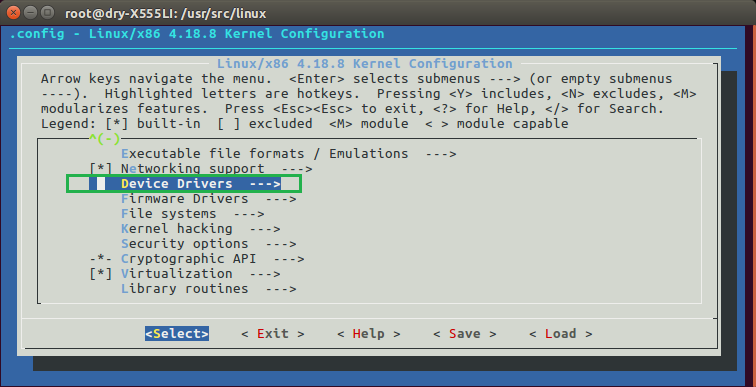
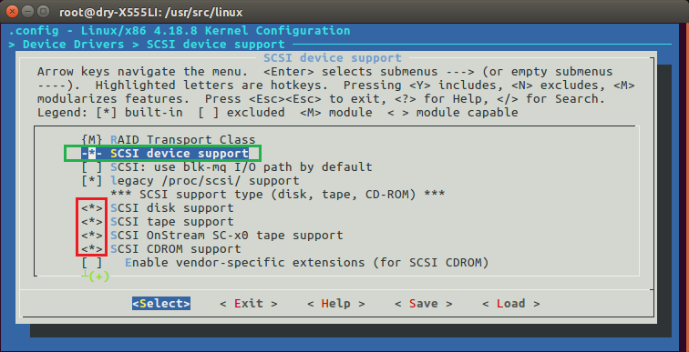

编译失败，虽千万次，吾往矣
什么！你编译内核...也...又失败了？看过无数篇实验教程却还是手足无措？得不到想要的结果却觉得是和指导书一样的操作？你感动天，感动地，却没能感动编译器。是不是有点想放弃？试图把第一个实验水过去。
Hey! Man! Don't do it before looking here! 本文中，笔者将从零开始，和你一起完成第一个实验，以一个重修os的老学长的姿态和你并肩前行，避免你误入不必要的坑。要自信！毕竟我在折腾了大半个月后都成功了，而且论手残，我是专业的。
准备
Linux分区&下载内核
笔者的笔电很垃圾，全机械磁盘 + 陈年CPU。放弃虚拟机，采用双系统的方式安装Ubuntu-16，却依然要面对无限网卡驱动无效 + 多核编译死机的问题。几经折腾后采用了如下不够科学却足够稳妥的分区方式：
| Type | Sign | Proportion |
|---|---|---|
| 主分区 | / | 30GB/100GB |
| 交换空间 | swap | 8GB/100GB |
| 逻辑分区 | /home | 52GB/100GB |
| 引导分区 | /boot | 10GB/100GB |
[*] Caution! 对 /boot 分区不要吝啬！我吃过亏！编译过程中空间不足最为致命！使用虚拟机的朋友要尤为注意！
官网下载最新版Linux内核 4.18.8,默认保存到 /home/user/下载
下载过程中，我们练习几条命令为接下来的操作准备
开启 root
快捷键打开终端 Ctrl+Alt+T1
2
3 sudo passwd root # 设置/更新root权限密码
su root # 切换到root权限
su user # 切换到user权限
[*] Caution! 具体执行时 user 是你的用户名,后面出现的所有 user 亦然
编辑器 Vim
本文的编辑工作交给 Vim1
2 sudo apt install vim # 安装最新版Vim
vim test.c # 在当前目录新建.c文件测试Vim
进入Vim,编辑一段 hello world吧！
Vim 基础操作：
- 按下
i开启编辑模式 - 按下
Esc开启命令模式 - 按下
:开始编辑命令 - 输入
wq保存并退出 - 输入
q!不保存并强行退出1
2
3
4
5
6
7
8//hello.c
int main()
{
printf("Hello World!\n");
return 0;
}
[*] Caution! 从/向终端复制/粘贴快捷键为 Ctrl+Shift+C/ Ctrl+Shift+V
编译器 gcc
1 | sudo apt install gcc # 安装最新版编译器gcc |
[*] Caution! 运行当前目录下的文件的命令是 ./filename
内核解压缩&移动
与此同时应该已经下载完成了
1 | cd /home/user/下载 # 用cd命令进入 下载 |
修改系统调用表
[*] Caution! 如不加强调，接下来所有操作均在 /usr/src/linux 下进行1
2 cd /usr/src/linux # 进入内核文件根目录
vim + ./arch/x86/entry/syscalls/syscall_64.tbl # 打开系统调用表所在的文件
可以看到系统调用表的格式
[*] Caution! 黄线框内为此版本内核的不同之处
添加一条系统调用1
335 64 mysetnice __64_sys_mysetnice

[*] Caution! 注意序列号数字的变化，实际操作时以你的版本为主,随机应变，还要关注下缩进
分配系统调用号
1 | vim + ./include/uapi/asm-generic/unistd.h # 打开目标文件的最后一行 |

[*] Caution! 末尾两处宏定义的变化
添加如下代码设置系统调用号1
2
__SYSCALL(__NR_mysetnice,sys_mysetnice)

申明系统调用原型
1 | vim + ./include/linux/syscalls.h # 打开目标文件的最后一行 |
添加函数原型的申明1
2//添加系统调用函数原型的申明
asmlinkage long sys_mysetnice(pid_t pid,int flag,int nicevalue,void __user * prio,void __user * nice);
[*] Caution! 原型申明插入在 #endif 的前一行
实现系统调用服务例程
1 | vim + ./kernel/sys.c # 打开目标文件最后一行 |
系统调用函数具体代码1
2
3
4
5
6
7
8
9
10
11
12
13
14
15
16
17
18
19
20
21
22
23
24
25
26
27SYSCALL_DEFINE5(mysetnice, pid_t, pid, int, flag, int, nicevalue, void __user *, prio, void __user *, nice)
{
struct pid * kpid;
struct task_struct * task;
int nicebef;
int priobef;
kpid = find_get_pid(pid); // 返回 pid
task = pid_task(kpid, PIDTYPE_PID); // 返回 task_struct
nicebef = task_nice(task);
priobef = task_prio(task);
if(flag == 1){
set_user_nice(task, nicevalue);
printk("修改前的nice值：%d\t修改后的nice值：%d\n", nicebef, nicevalue);
return 0;
}
else if(flag == 0){
copy_to_user(nice, (const void*)&nicebef, sizeof(nicebef));
copy_to_user(prio, (const void*)&priobef, sizeof(priobef));
printk("该进程的nice值：%d\n", nicebef);
printk("该进程的prio值：%d\n", priobef);
return 0;
}
printk("flag 有误，重新输入!\n");
return EFAULT;
}
[*] Caution! 代码插入在 #endif 前一行
编译&安装(内核&模块)
配置内核
1 | apt-get install libncurses5-dev # 安装必备组件 |
弹出配置内核界面
[*] Caution! 可按下 y/ m / n 进行修改




编译内核
1 | make -jX # 多线程编译，X为线程数，笔者多线程直接死机，所以使用 make 单线程进行 |

编译模块
1 | make modules # 试图编译模块 |
安装模块&内核
1 | uname -a # 检查旧内核版本 4.15.0 |
测试系统调用
[*] Caution! 接下来操作在 /home/user 下进行即可1
2
3
4 uname -a # 检查内核版本 4.18.8
Linux user-XLI 4.18.8 #1 SMP Sep 16 11: 07:51 CST 2018 x86_64 x86_64 x86_64 GNU/Linu
vim test_syscall.c # 编写测试系统调用的程序
gcc test_syscall.c -o test # 编译生成可执行文件
测试程序具体代码1
2
3
4
5
6
7
8
9
10
11
12
13
14
15
16
17
18
19
20
21
22
23
24
25
26//test_syacall.c
int main()
{
int pid = 0;
int flag = 0;
int nicevalue = 0;
int prio = 0;
int nice = 0;
int result;
printf("please input: pid, flag, nicevalue\n");
scanf("%d %d %d", &pid, &flag, &nicevalue);
result = syscall(__NR_mysyscall, pid, flag, nicevalue, (void *)&prio, (void *)&nice);
if (result == 0)
{
printf("pid:%d, flag:%d, nicevalue:%d, prio:%d, nice:%d\n", pid, flag, nicevalue, prio, nice);
return 0;
}
printf("some wrong, maybe pid is not exist\n");
return 0;
}
打开两个终端1
top # 终端1：top 命令查看进程表
1 | ./test # 终端2：测试系统调用 |
测试详情：
若你的测试效果大该如此这般，那么恭喜你，成功了大半！
至于另一半？你得深入了解一下Linux下系统调用的实质。
实验详解
在计算机领域，进程标识符（英语：process identifier，又略称为进程ID（英语：process ID）、PID）是大多数操作系统的内核用于唯一标识进程的一个数值。这一数值可以作为许多函数调用的参数，以使调整进程优先级、杀死进程之类的进程控制行为成为可能。
1 | // ./usr/include/sys/types.h |
1 | // ./usr/include/bits/types.h |
1 | // ./usr/include/bits/typesizes.h |
1 | // ./usr/include/bits/types.h |
兜兜转转之后，可知 pid_t 就是 int 类型
Nice值是类UNIX操作系统中表示静态优先级的数值。每个进程都有自己的静态优先级，优先级高的进程得以优先运行。Nice值的范围是-20~+19，拥有Nice值越大的进程的实际优先级越小，默认的Nice值是0。由于Nice值是静态优先级，所以一经设定，就不会再被内核修改，直到被重新设定。Nice值只起干预CPU时间分配的作用，实际中的细节，由动态优先级决定。
The difference is that PR is a real priority of a process at the moment inside of the kernel and NI is just a hint for the kernel what the priority the process should have.
区别在于Priority是内核内部进程的真正优先级，Nice只是内核提示进程应具有的优先级。
一般情况下，Priority = Nice + 20，也就是Priority的值为0~39。但是上述理论仅仅适用于调度策略是SCHED_OTHER的进程。